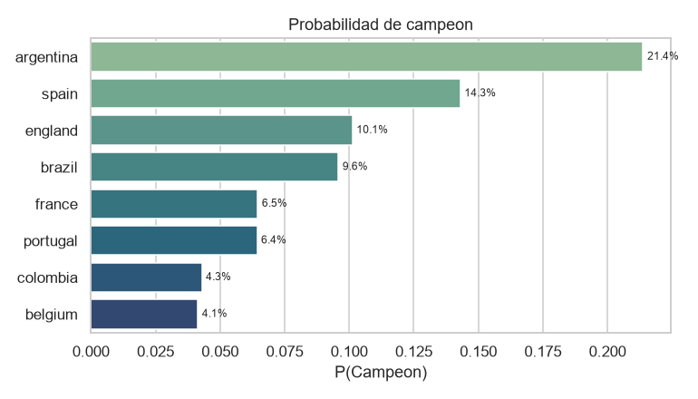

Pronostico diario - Mundial 2026
Snapshot 2026-06-13T22-02-08Z_baseline-v1-2026-06-13-50d98ab - publicado 2026-06-13T22:02:08Z - modelo baseline-v1-2026-06-13-50d98ab
Resumen ejecutivo
Proximo bloque de partidos
| Partido | Local | Visitante | P(1) | P(X) | P(2) |
|---|---|---|---|---|---|
| WC26-004 | united-states | paraguay | 29.8% | 31.8% | 38.4% |
| WC26-005 | haiti | scotland | 11.8% | 19.4% | 68.8% |
| WC26-006 | australia | turkiye | 33.5% | 29.2% | 37.3% |
| WC26-007 | brazil | morocco | 40.1% | 33.3% | 26.5% |
| WC26-008 | qatar | switzerland | 5.3% | 12.1% | 82.6% |
| WC26-009 | ivory-coast | ecuador | 20.9% | 37.4% | 41.6% |
| WC26-010 | germany | curacao | 94.1% | 4.6% | 1.3% |
| WC26-011 | netherlands | japan | 40.1% | 29.2% | 30.7% |
| WC26-012 | sweden | tunisia | 42.6% | 29.5% | 27.9% |
| WC26-013 | saudi-arabia | uruguay | 10.8% | 28.0% | 61.3% |
| WC26-014 | spain | cape-verde | 87.3% | 9.9% | 2.9% |
| WC26-015 | iran | new-zealand | 60.6% | 26.8% | 12.6% |
| WC26-016 | belgium | egypt | 55.0% | 28.0% | 17.0% |
| WC26-017 | france | senegal | 50.8% | 28.3% | 20.9% |
| WC26-018 | iraq | norway | 9.9% | 21.6% | 68.5% |
| WC26-019 | argentina | algeria | 61.6% | 26.1% | 12.3% |
| WC26-020 | austria | jordan | 66.9% | 21.1% | 12.0% |
| WC26-021 | ghana | panama | 37.9% | 29.9% | 32.2% |
| WC26-022 | england | croatia | 49.3% | 29.9% | 20.7% |
| WC26-023 | portugal | dr-congo | 64.3% | 25.0% | 10.7% |
| WC26-024 | uzbekistan | colombia | 11.2% | 23.8% | 65.0% |
| WC26-025 | czechia | south-africa | 50.7% | 28.5% | 20.8% |
| WC26-026 | switzerland | bosnia-and-herzegovina | 69.1% | 20.2% | 10.7% |
| WC26-027 | canada | qatar | 66.8% | 21.5% | 11.7% |
| WC26-028 | mexico | south-korea | 40.8% | 31.0% | 28.2% |
| WC26-029 | brazil | haiti | 92.5% | 5.7% | 1.8% |
| WC26-030 | scotland | morocco | 17.5% | 31.5% | 51.0% |
| WC26-031 | turkiye | paraguay | 37.7% | 30.4% | 31.9% |
| WC26-032 | united-states | australia | 29.3% | 30.3% | 40.4% |
| WC26-033 | germany | ivory-coast | 55.2% | 26.2% | 18.6% |
| WC26-034 | ecuador | curacao | 82.4% | 14.2% | 3.4% |
| WC26-035 | netherlands | sweden | 60.9% | 21.3% | 17.7% |
| WC26-036 | tunisia | japan | 16.3% | 30.1% | 53.6% |
| WC26-037 | uruguay | cape-verde | 65.9% | 24.9% | 9.3% |
| WC26-038 | spain | saudi-arabia | 83.7% | 12.5% | 3.8% |
| WC26-039 | belgium | iran | 53.5% | 26.3% | 20.2% |
| WC26-040 | new-zealand | egypt | 15.0% | 32.7% | 52.3% |
| WC26-041 | norway | senegal | 40.8% | 29.5% | 29.8% |
| WC26-042 | france | iraq | 76.4% | 17.5% | 6.1% |
| WC26-043 | argentina | austria | 57.8% | 28.6% | 13.6% |
| WC26-044 | jordan | algeria | 13.2% | 21.0% | 65.8% |
| WC26-045 | england | ghana | 76.8% | 17.5% | 5.7% |
| WC26-046 | panama | croatia | 9.9% | 19.1% | 71.0% |
| WC26-047 | portugal | uzbekistan | 68.0% | 22.1% | 9.9% |
| WC26-048 | colombia | dr-congo | 61.3% | 26.7% | 12.0% |
| WC26-049 | scotland | brazil | 12.2% | 20.3% | 67.5% |
| WC26-050 | morocco | haiti | 79.6% | 15.6% | 4.8% |
| WC26-051 | switzerland | canada | 48.1% | 28.6% | 23.3% |
| WC26-052 | bosnia-and-herzegovina | qatar | 47.6% | 27.4% | 24.9% |
| WC26-053 | czechia | mexico | 29.0% | 29.9% | 41.2% |
| WC26-054 | south-africa | south-korea | 21.0% | 29.9% | 49.1% |
| WC26-055 | curacao | ivory-coast | 6.6% | 18.2% | 75.2% |
| WC26-056 | ecuador | germany | 29.4% | 32.0% | 38.6% |
| WC26-057 | japan | sweden | 52.4% | 25.9% | 21.7% |
| WC26-058 | tunisia | netherlands | 13.4% | 24.5% | 62.0% |
| WC26-059 | turkiye | united-states | 45.4% | 25.9% | 28.6% |
| WC26-060 | paraguay | australia | 31.5% | 35.0% | 33.4% |
| WC26-061 | norway | france | 25.8% | 26.6% | 47.5% |
| WC26-062 | senegal | iraq | 59.0% | 28.0% | 12.9% |
| WC26-063 | egypt | iran | 29.1% | 33.9% | 37.0% |
| WC26-064 | new-zealand | belgium | 5.5% | 16.3% | 78.1% |
| WC26-065 | cape-verde | saudi-arabia | 30.0% | 34.2% | 35.8% |
| WC26-066 | uruguay | spain | 18.8% | 29.7% | 51.5% |
| WC26-067 | panama | england | 4.5% | 13.8% | 81.7% |
| WC26-068 | croatia | ghana | 65.6% | 22.7% | 11.7% |
| WC26-069 | algeria | austria | 32.5% | 30.4% | 37.1% |
| WC26-070 | jordan | argentina | 3.0% | 11.2% | 85.8% |
| WC26-071 | colombia | portugal | 33.0% | 28.5% | 38.5% |
| WC26-072 | dr-congo | uzbekistan | 31.5% | 38.8% | 29.7% |
Probabilidades del torneo

| Equipo | P(R16) | P(QF) | P(SF) | P(Final) | P(Campeon) |
|---|---|---|---|---|---|
| argentina | 72.3% | 59.3% | 44.1% | 31.1% | 21.4% |
| spain | 66.7% | 47.9% | 36.4% | 24.0% | 14.3% |
| england | 70.4% | 49.1% | 30.7% | 17.5% | 10.1% |
| brazil | 69.6% | 48.7% | 31.1% | 17.5% | 9.6% |
| france | 67.0% | 41.1% | 24.6% | 13.0% | 6.5% |
| portugal | 66.7% | 42.0% | 23.4% | 13.0% | 6.4% |
| colombia | 60.1% | 34.8% | 18.4% | 9.4% | 4.3% |
| belgium | 70.9% | 44.1% | 18.9% | 9.2% | 4.1% |
Evolucion temporal
Comparacion vs anterior (sin snapshot previo) y vs primero (2026-06-13T22-02-08Z_baseline-v1-2026-06-13-50d98ab).
Primer snapshot publicado: aun no hay historia para comparar.
Calibracion acumulada (modelo vs mercado)
Aun no hay partidos resueltos para evaluar log-loss / RPS acumulados.
Nota metodologica
Este reporte se renderiza exclusivamente desde artefactos congelados del snapshot (2026-06-13T22-02-08Z_baseline-v1-2026-06-13-50d98ab) y el ledger canonico de calibracion; no reentrena el modelo ni reejecuta simulaciones. Las probabilidades del torneo provienen de 10000 simulaciones Monte Carlo (semilla 20260613) sobre el baseline Elo + Dixon-Coles. El benchmark de mercado es la mediana de-margined entre casas, congelada al publicar.